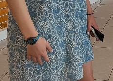
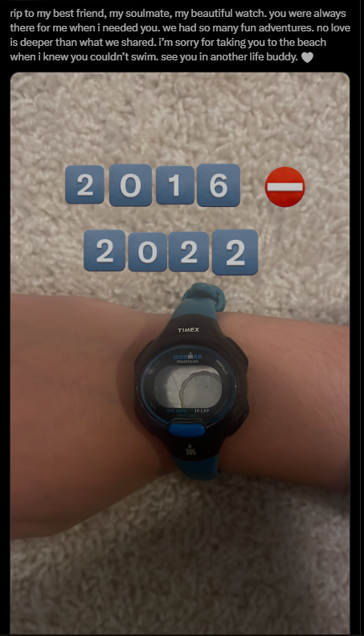
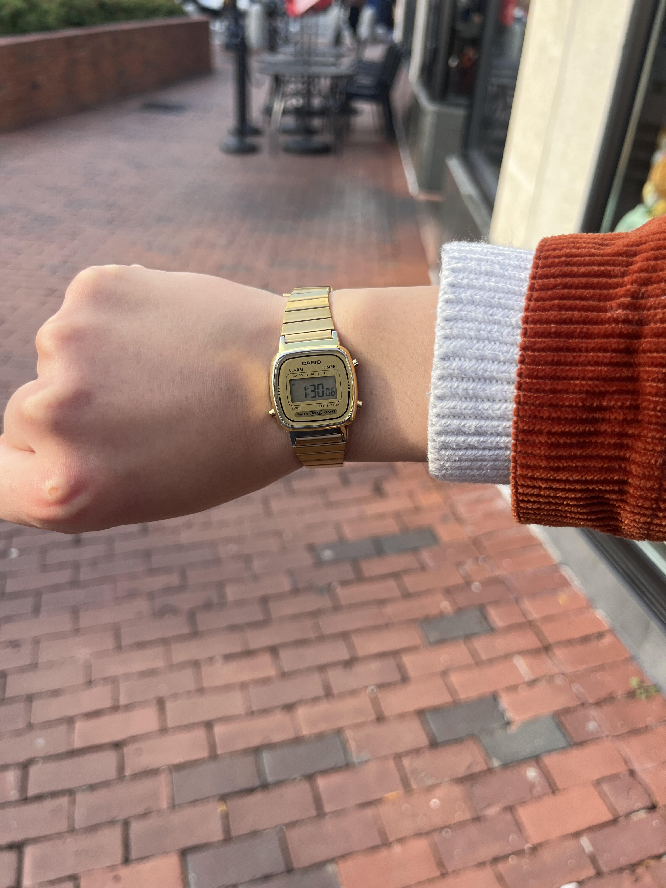
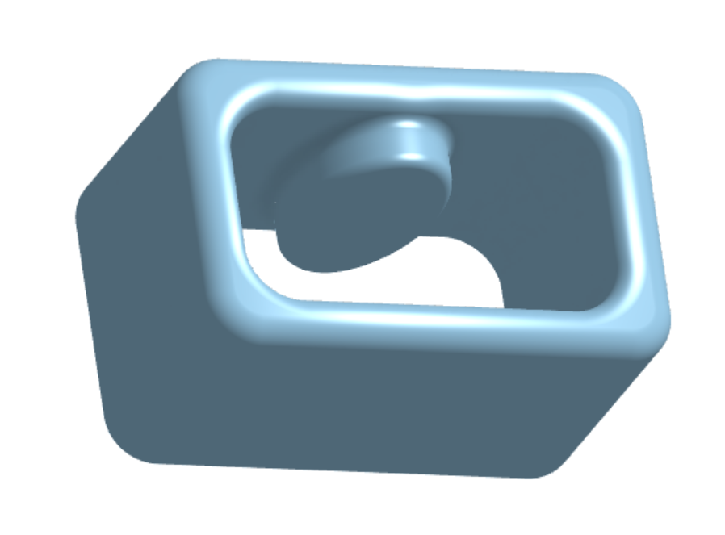
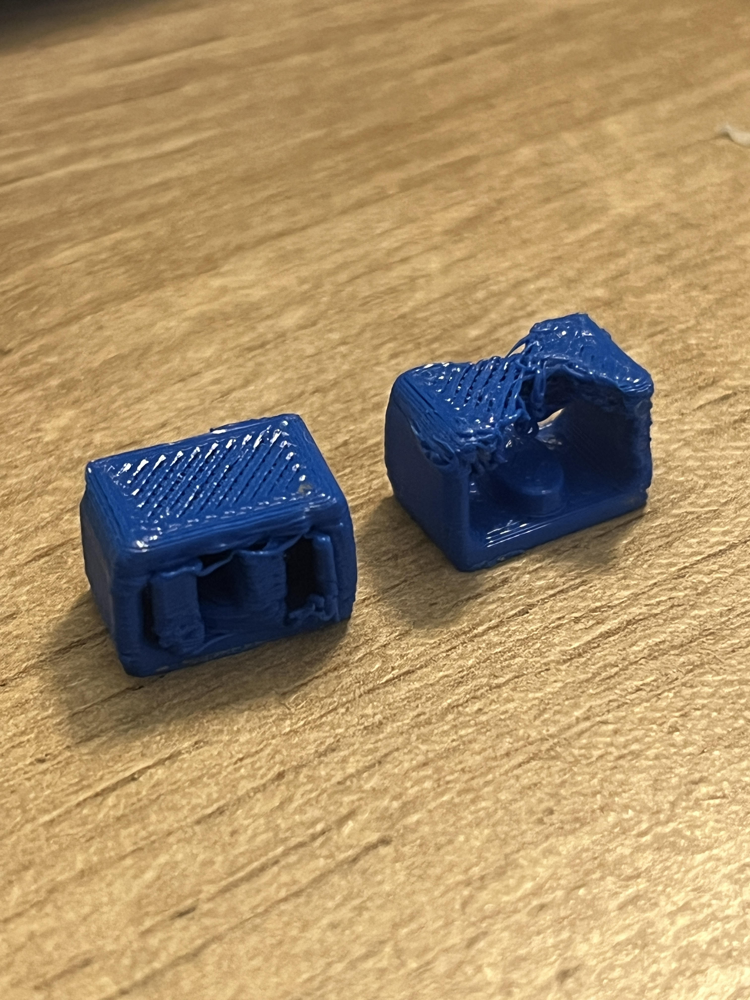
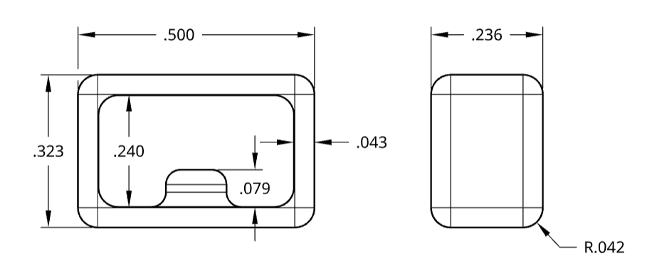
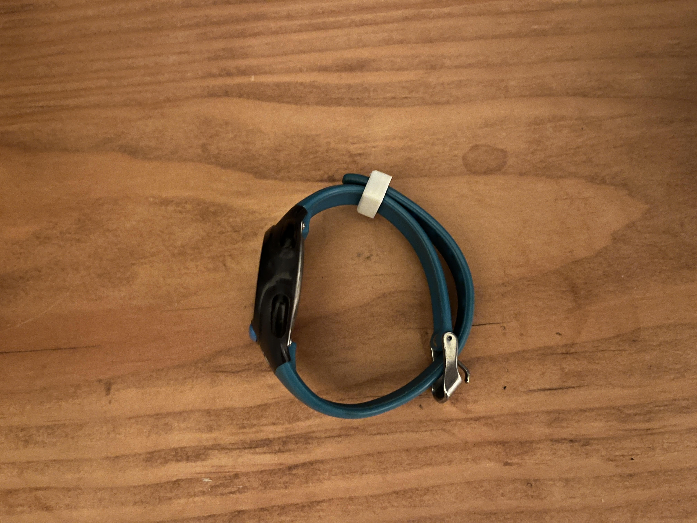

Watch
Abstract & Background
I don't really like material stuff (it stresses me out), however, every so often I'll latch onto a possession, and I feel it intertwine with my identity (Exhibit A - Nalgene H2O Bottle). In high school I became a camp counselor and needed to start wearing a watch. Eventually I bought a Timex Ironman (see Fig 1). It soon became a staple in my life and transcended beyond the summer heat. I wore this watch every day from 2016 onward. After the battery died in 2020, I performed some minor surgery and replaced it. This transplant extended my watch's life for a couple years which brought me joy like no other.
  
One fateful day, I worked up the courage to go to the beach with a long time pal. My replacement battery was still going strong, but as a doctor in training, I didn't close the stiches properly and my watch's gasket had a sub optimal seal. Being a good mother, I knew this and avoided water at all costs, but on this day, I looked away for one second and when I realized some water had infected Mr. Timex, it was already too late. I saw the ink drain out of my watch as the display flatlined. A moment of silence for my fallen comrade, Fig 2. Flowers were accepted at the Celebration of Life ceremony. I mourned but ultimately had to move on, becuase I know that is what my watch would have wanted.
Soon after receiving Mr. Timex 2.0, I wore him on a camping trip. Unfortunately, the little band that holds the excess strap into place (aka a free loop) gave out and the strap main was free to hang in an unplesant and unwieldy manner. Essentially, the watch band was so old part of it had petrified and disintegrated in front of my very eyes. I put the watch on my closet shelf, where it sat for over a year, until finally I decided to design and 3D print a replacement loop. The rest of this page outlines that process.
Method & Results
At the time of designing this watch pieces, I was a real CAD novice. After making some rough measurements, I started modeling. Fig 4a displays my first iteration and its respective print (Fig 4b).




Discussion & Learnings
This was a good intro project into both CAD and 3D printing. It was a reminder of how design is an iterative process and filament selection is an important consideration. I got exposure to the various tools in Onshape for both generating parts and making them look nice. If I were to make one more iteration, I'd modify the dimensions a bit more, namely the height of the loop, but overall I'm happy with how this project turned out. An easy and quick fix to reunite with my beloved companion.